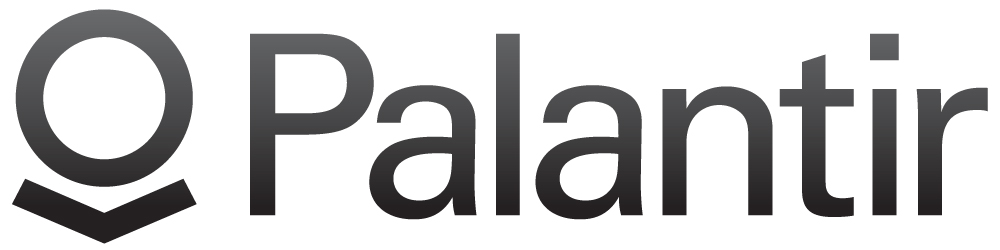
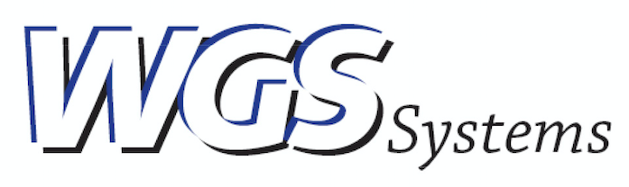

HACK TJ 2k17- Sponsors
Sponsors
Click the Company Description to visit their website
 Jabil is Helping Brands Innovate a Digital Future.
The increasingly digital world around us is driving pervasive connectivity, instant gratification and infinite customization, forcing markets to evolve at an accelerated pace with cycles shrinking from years to months and, in some industries, even weeks. New technologies and platforms are facilitating innovation and disruption. Companies need to bring innovative products to market more quickly and reliably than ever before.
Jabil is Helping Brands Innovate a Digital Future.
The increasingly digital world around us is driving pervasive connectivity, instant gratification and infinite customization, forcing markets to evolve at an accelerated pace with cycles shrinking from years to months and, in some industries, even weeks. New technologies and platforms are facilitating innovation and disruption. Companies need to bring innovative products to market more quickly and reliably than ever before.
 We put business on the map.
Yext puts business on the map. The Yext Knowledge Engine lets companies manage their digital knowledge in the cloud and sync it to over 100 services, including Apple Maps, Microsoft Bing, Facebook, Google Maps, Instagram, Siri and Yelp. Yext Listings, Pages, and Reviews help businesses around the globe facilitate face to face and digital interactions that boost brand awareness, drive foot traffic, and increase sales.
We put business on the map.
Yext puts business on the map. The Yext Knowledge Engine lets companies manage their digital knowledge in the cloud and sync it to over 100 services, including Apple Maps, Microsoft Bing, Facebook, Google Maps, Instagram, Siri and Yelp. Yext Listings, Pages, and Reviews help businesses around the globe facilitate face to face and digital interactions that boost brand awareness, drive foot traffic, and increase sales.

We believe in augmenting human intelligence, not replacing it.
With good data and the right technology, people and institutions today can still solve hard problems and change the world for the better.
In 2004, when we looked at the available technology, we saw products that were too rigid to handle novel problems, and custom systems that took too long to deploy and required too many services to maintain and improve.
We saw automated approaches that failed against adaptive adversaries, and all or nothing access controls that forced organizations to make unacceptable trade offs between collaborating and securing sensitive data from misuse.
We saw a need for a different kind of technology, and we knew it would take a different kind of company to build it. That is why we founded Palantir.
Capitol One is a diversified bank that offers a broad array of financial products and services to consumers, small businesses, and commercial clients. A Fortune 500 company, Capital One has one of the most widely recognized brands in America. As one of the nation’s top 10 largest banks based on deposits, Capitol One serves banking costumers through branch locations primarily in New York, New Jersey, Texas, Louisiana, Maryland, Virginia, and the District of Colombia.

WGS Systems, LLC is an award winning Maryland based small business founded in 2007 to provide military, intelligence and law enforcement organizations around the world affordable, innovative, and high performance systems. We specialize in the development of comprehensive Intelligence, Surveillance and Reconnaissance (ISR); including mission planning, survey, collection, detection, location, tracking, recording, processing, exploitation and dissemination.
No website found
Partners